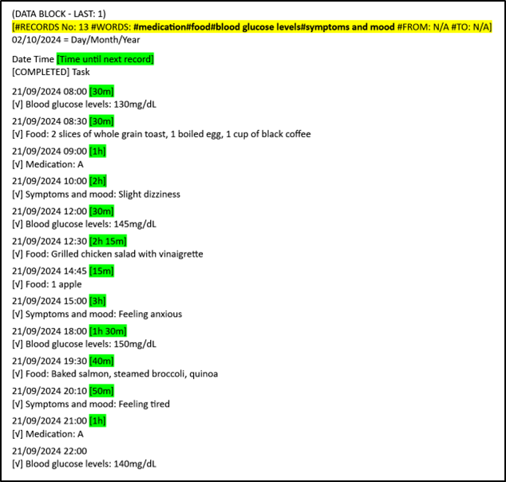

⏮
14. Create report (text document) with specific records
This manual will show you how to use the
search system to create a report with specific records.
This will allow to find specific records and create a report, text file, that a human will be able to read. Then you will be able to share the information with other people.
Creating a report with your own information could be useful in situations like these:
1. Doctor visits: You can export your medication intake, symptoms, and mood records to share with your healthcare provider. This can help doctors make more informed decisions about treatment plans.
2. Dietitians/nutritionists: You can track your diet and weight and share these records with your dietitian for personalized dietary advice.
3. Personal trainers: You can share your workout records and progress with your personal trainer to get tailored fitness plans.
4. Mental health: You can track your mood and share it with your therapists for better mental health management.
5. Work projects: You can track completed tasks and time spent on various tasks and share these records with your team.
6. Travel logs: You can track your travel experiences, including places visited and activities done, and share these records with friends or on social media.
7. Legal documentation: You can maintain records of important events or activities and share these with legal advisors if needed.
Remember, SECURElogBook is a SAFE FLEXIBLE TOOL that you can use for many different things!
Let’s say we are living in the future and your doctor ask you to record this information:
. Medication.
. Food.
. Blood glucose levels.
. Symptoms and mood.
Now you have recorded the information and we want to share it with our doctor.
1. Open the
search system by pressing the button in the main window (blue) and search for: #medication#food#blood glucose levels#symptoms and mood
Because we want to find all records related to:
. Medication.
. Food.
. Blood glucose levels.
. Symptoms and mood.
We add “#” in front of each word. This allows the
search system to find multiple words at the same time. The
search system allows to find until 5 different words at the same time. The
search system will only show records where those words are present.
2. Press “SEARCH”.
Now SECURElogBook will only show the search results:
3. Open the
search system again by pressing
Now, because there are search results, the
search system will show two extra buttons on the bottom left corner.
4. Press the bottom, indicated with a yellow arrow in the picture above, to open the “REPORT” window.
The “REPORT” window will transform the records into a report, text file, that a human will be able to read.
This window will generate blocks of data, text information, that you can copy and paste. The more information your search result will have the more blocks of data will be created.
5. Hold on the data block to copy it.
Remember that if you close the “REPORT” window, the information will be removed from the clip board to do not allow other apps to access to your information.
6. Paste the information in the instant messaging app or email app to share the information with your friend.

Highlighted information in yellow:
. #RECORDS No. = Number of search results.
. #WORDS = Searched terms.
. #FROM = Start date.
. #TO = End date.
You can also share the information without internet, using USB drive, USB memory or SD card.
Remember that you can protect your information. 7-Zip is a free and open-source file archiver for Windows. You can use it to password/encrypt protect your information.
Now your doctor can review your information to see if it is effective and make any changes if necessary.
SECURElogBook is not another Todo list, SECURElogBook is a SAFE FLEXIBLE TOOL that you can use to make your life easier and better, inside and outside work!